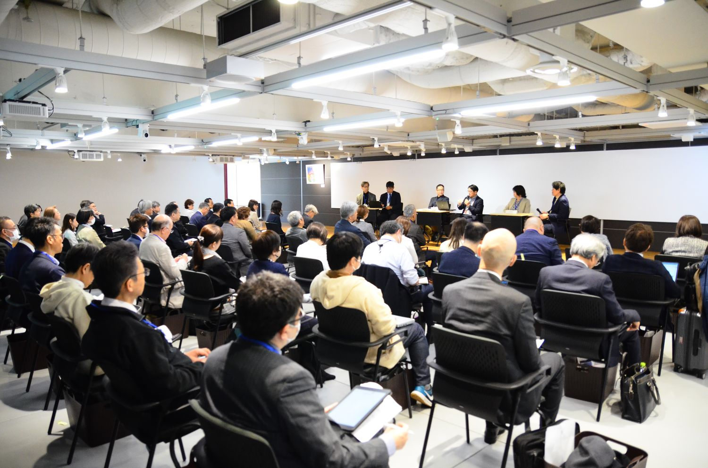
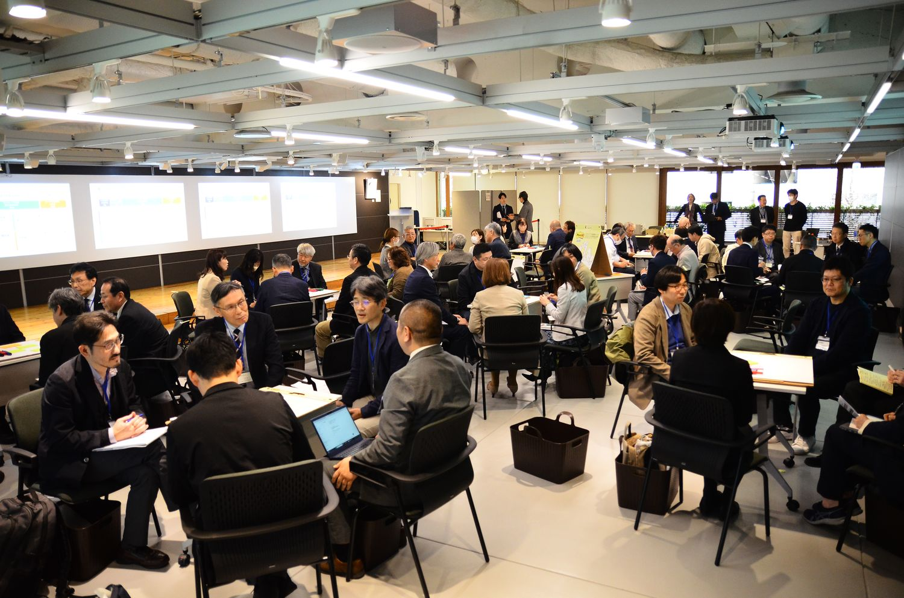
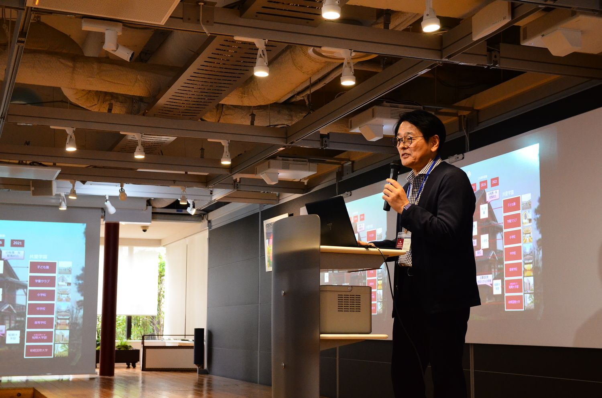
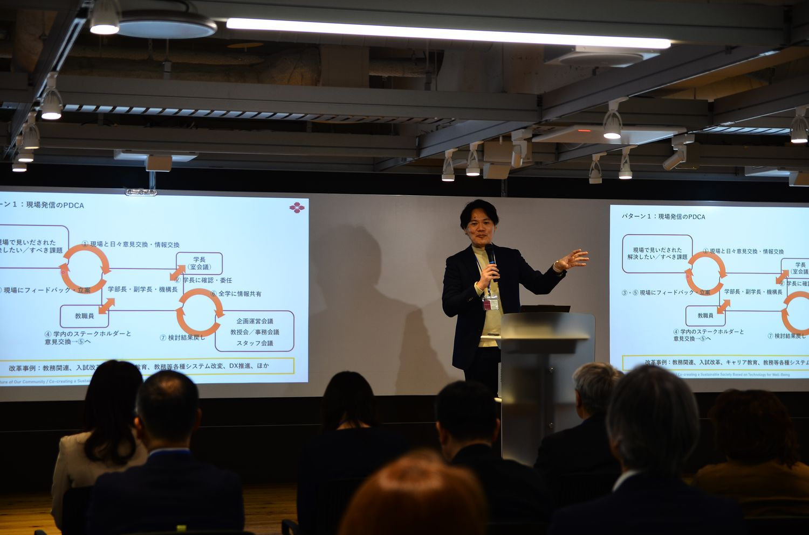
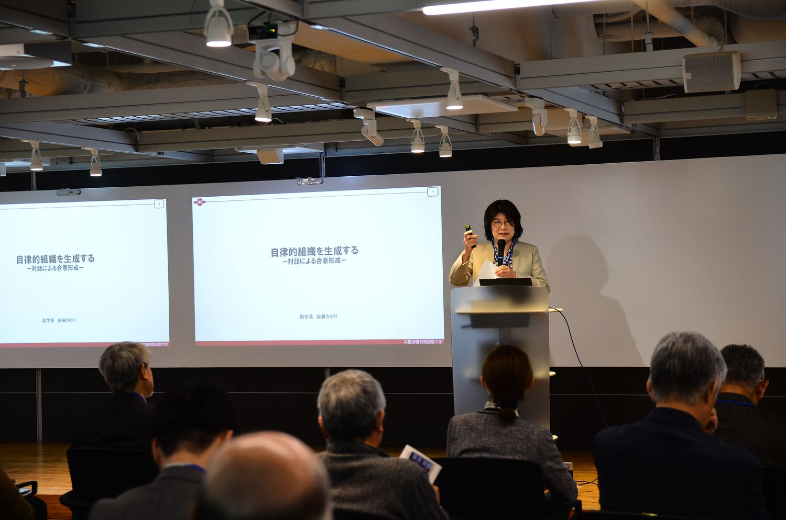
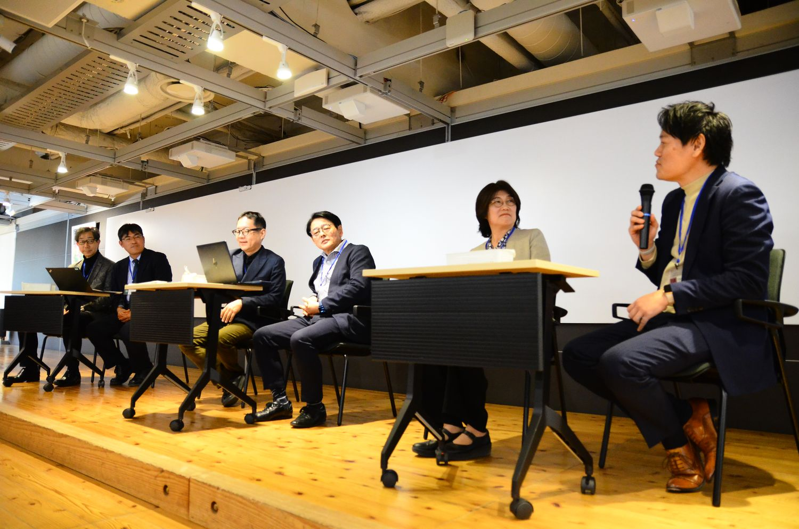
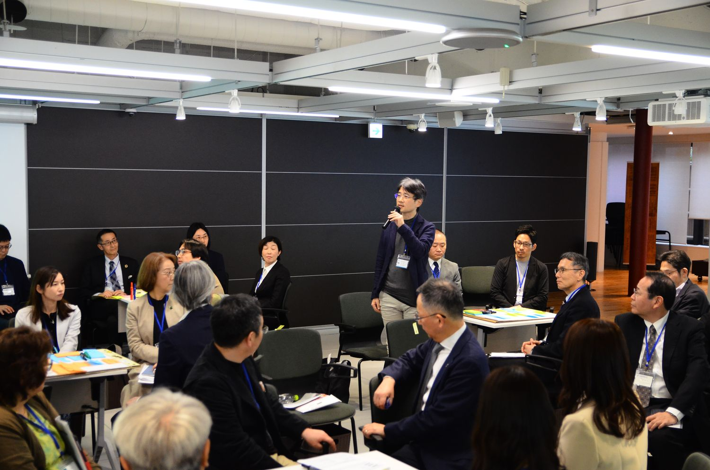

ビジョンはどう現場に届くのか学長・副学長・学部長が語る教学マネジメントの深化と変革
大学の教育ビジョンが、学長から副学長・学部長を経て、一人ひとりの授業担当者に届き、最終的に学生の成長につながるまで――そのプロセスには何が起きているのでしょうか。
第8回は、共愛学園前橋国際大学から大森昭生学長、後藤さゆり副学長、村山賢哉学部長の三者が揃って登壇するという、これまでにない試みで実施しました。同じ大学の「トップ」「ミドル」が、同じ改革について、それぞれの立場から語ることで、そこに現れた「見え方の落差」こそが、今回最大の発見でした。



開催概要
| 日時 | 2026年3月22日（日） 14:00開始 |
|---|---|
| 会場 | 株式会社内田洋行 新川本社 ユビキタス協創広場 CANVAS（東京都中央区新川2-4-7） |
| 主催 | 大学リーダーシップ研究会 |
| 参加者 | 70名（一般参加60名／主催・事務局7名／登壇者3名） |
参加者数は、研究会が保有する第1〜9回の統合参加者データ（v13）にもとづく集計です。申込記録を基礎としているため、当日の実数とは若干の差がありえます。
登壇者とプログラム
- 講演大森 昭生共愛学園前橋国際大学 学長
- 講演村山 賢哉共愛学園前橋国際大学 国際社会学部長「改革の進め方の裏側」
- 講演後藤 さゆり共愛学園前橋国際大学 副学長「自律的組織を生成する――対話による合意形成」
- パネルディスカッション山本 啓一（ファシリテーター）・吉村 充功・成田 秀夫北陸大学・日本文理大学・日本文理大学
- グループワーク成田 秀夫（ファシリテーター）日本文理大学「自分の大学の翻訳構造を描く」
開催報告
以下は、当日の発言録をもとに、各登壇者の発言の要旨をまとめたものです。発言録は自動文字起こしをもとに事務局が作成し、登壇者の確認を経ています。引用部分は発言録からの抜粋です。
趣旨説明
山本 啓一（北陸大学）
本研究会は2018年に4名で発足し、2022年からは科研費の助成を受けて年2回の公開研究会を開いています。2025年度に始まった第2期では、「教学マネジメントと生き残りのための変革」をテーマに、「ダイナミックな教学マネジメント体制の構築」をキーワードとして研究を進めています。
山本は、質保証を深めることと、外から新しいものを取り込むことを両立させる「両利きの経営」が、いまの大学に必要だと述べました。そのうえで、トップ・ミドル・現場が相互に行き来する関係を「ダイナミック」と呼び、学長の教育ビジョンが授業や学生のレベルにどう届くのかを今回の問いとしました。登壇者は共愛学園前橋国際大学の学長・副学長・学部長の3名です。会場には学長8名を含む教職員が集まり、教員と職員の比率はおよそ1.7対1でした。
ミドルがいなければ、現場の授業が変わらない。現場の授業が変わらなければ、学生が変わらない。
山本 啓一
話題提供1 大森 昭生
共愛学園前橋国際大学 学長

大森学長はまず、大学の概要と意思決定の仕組みを紹介しました。学長は推薦委員会が候補者を選び、教職員全員の信任投票を経て理事会が承認します。副学長と学長補佐は学長が指名します。一方、学部長は課長以上の職員も議決権を持つ教授会の選挙で選ばれます。毎週の学長室会議には理事長も出席し、教員・職員だけでなくパートや委託の職員も参加するスタッフ会議を、教授会よりも重要な会議体として置いています。
続いて最近の取組が三つ紹介されました。第一は学修成果の可視化です。学生はポートフォリオに蓄えた記録をもとに「共愛12の力」のルーブリックで自己評価し、全学生が教員と面談します。この基盤を作ったのは後藤副学長です。第二はDPからさかのぼったカリキュラム改革で、4年かけて480科目を346科目に絞り、共通科目と専門科目の比率を4対6から6対4に改めました。第三は2026年4月に開設するデジタル共創学部で、構想は学長が描き、モジュール型の科目設計は村山学部長が担いました。
やっぱりDPは受験生との約束、4年後にこの力がついてるよという約束ですので、そこを最初からお話をしています。
大森 昭生
だから学長がこうだと思っても、教授会っていうか学部が違うよねって言える体制にしているということなんです。
大森 昭生
話題提供2 村山 賢哉
共愛学園前橋国際大学 国際社会学部長（2026年4月からデジタル共創学部長）

村山学部長は、ミドルが実際にどう動いているかを二つの型で説明しました。一つは現場から始まる型です。入試や教務の現場で問題が提起されると、学長室会議で相談します。学長は「それで行こうか」「じゃあお願いね」と応じるだけで、具体的な指示はあまり出しません。学部長・副学長・機構長が現場と関係者の調整に走り、各部門とコースの長が集まる月1回の企画運営会議に諮ります。8割はそのまま通り、2割は差し戻されます。
もう一つは学長のビジョンを実現する型です。学長が国や社会の動きを大学の言葉に置き換えて示し、具体化はミドルに任せます。デジタル共創学部の設置では、新カリキュラムの検証が終わらないうちに国の成長分野支援の申請が採択され、マネジメントスタッフ2名と村山学部長の3名で学部を設計しました。
上下で常に情報が共有される。板挟みになることがあまりないというのが、ミドルの率直な感想でして。
村山 賢哉
よく言えば非常に柔軟で、権限委譲がスムーズに行われている組織、悪く言うと、実は自転車操業というところではあるんですけれども
村山 賢哉
話題提供3 後藤 さゆり
共愛学園前橋国際大学 副学長

後藤副学長は、質保証のために教員一人ひとりの授業を変えてもらう場面に絞って話しました。前提として、「共愛＝共生」という理念が学生も含めて共有されていること、開学以来の学生中心主義があること、教職員も学生も運営に関わる「スタッフ」であることを挙げました。文部科学省の補助事業も、ビジョンを先に描いて取りに行ったのではなく、事業を走らせるうちにいまの形ができたといいます。
新カリキュラムを作る際には、決定を伝達するのでも、賛否を問う議論にするのでもなく、対話を重ねました。5つのコースはそれぞれ専門分野が違います。後藤副学長は案を一つに絞らずに示し、各コースから望ましい形を聞き取って、ほぼ1年かけて話し合いを続けました。その結果、大きな反対はなかったと述べました。
提案しますが、各コースでどんな形が望ましいかを考えてください
後藤 さゆり（カリキュラム案を示した際の言葉）
本学の風土として一番大事にしたのは、対話でした
後藤 さゆり
パネルディスカッション
ファシリテーター：山本 啓一／登壇：大森 昭生・後藤 さゆり・村山 賢哉／コメンテーター：吉村 充功・成田 秀夫

吉村先生は、学内で誰が板挟みになっているのかを尋ねました。村山学部長は、論理で仕組みを作ろうとする自分と現場の間に後藤副学長が入っているのではないかと答え、後藤副学長は、やっているときは必死で板挟みとは感じなかったと応じました。ビジョンは最初から共有されていたのかという問いには、後藤副学長と村山学部長が、学長個人よりも大学の理念と学生中心主義に従ってきたと答えました。成田先生が、自転車操業のように動き続けているから改革が進むのではないかと問うと、大森学長は止まったら終わりだと答えました。
山本は、大森学長自身が国の動向を学内向けに翻訳していると指摘しました。村山学部長は、学長が大学として翻訳したものを、自分が学生に合わせて翻訳していると述べました。平時の学長は学内を歩いて相談を受け、ミドルがそれを形にするために走り回る関係も紹介されました。総務部長を学長補佐に充てている理由について、大森学長は、予算に関わる実務上の理由と、教員と職員が対等であることを示す意味の二つを挙げました。
いや逆に言うと止まったら死ぬんじゃないですか。止まったら死ぬんですよ。
大森 昭生
学生中心主義で、学生のためにって言った瞬間に、うちのスタッフってみんな賛同してくれるんです。
後藤 さゆり
グループワークと質疑応答
ファシリテーター：成田 秀夫

参加者は9グループに分かれ、ビジョンが現場に届いている部分と途切れている部分を付箋に書き出し、「明日からの一手」を話し合いました。副学長や学部長までは届くがその下の教員には届きにくい、教員一人ひとりが自分のこととして受け止めていない、危機感が共有されていない、教員と職員が分断されている、といった課題が多くのグループから挙がりました。一手としては、味方を増やすこと、学生の声を聞くこと、自由に話せる会議体を設けること、学部を横断して翻訳する役職や組織を置くことなどが提案されました。
質疑応答では、共愛学園前橋国際大学の初期の危機感について質問がありました。大森学長は、入学定員充足率が64%まで落ちた時期があったと述べ、当時は声を上げるのではなく、自ら仕組みを作って上の世代を巻き込んだと答えました。学長補佐を置く利点を問われると、小さな組織で役職者が半数ほどになり、教職員が大学運営を自分のこととして考えるようになると述べました。
だから声を上げたんじゃないんです。その仕組みを作って、動いて、実際開催する。そこにその先生、上の先生たちに来ていただくというとこまで仕掛けないと
大森 昭生
味方になってくれる人がいる位置まではしっかりつながる
グループの発表から
閉会挨拶
吉村 充功（日本文理大学）
吉村先生は、学長個人のビジョンではなく、建学の精神を含む大学のビジョンを教職員がどう解釈し共有しているかが大切だと述べました。学長自身も翻訳者であり、トップとミドルの役割は、走り回ってくれる教職員を学内で見つけることにあるとまとめました。あわせて、高校教育改革と大学の教学マネジメントとの接続を、本研究会の科研で扱えるテーマとして挙げました。第9回「共創を作り出すリーダーシップ」では、この高校との接続も取り上げています。
第8回は、科研費第2期のパイロット事例研究として位置づけています。トップも翻訳者であること、翻訳が上からも下からも行われること、各層の文脈に合わせて言い換えられること、その前提に互いの信頼があることが確認できました。これらは今後の調査設計に活かします。
2026年3月25日の『教育学術新聞』に開催報告が掲載されました。
走り回ってくれる教員、職員の方をどれだけ学内で見つけて、自分ごと化して動けるようにしていくか
吉村 充功
参加者アンケートから
学長・副学長・学部長の三者が異なる景色を語ったことへの反応が中心です。ビジョンを「翻訳」する役割を自分の立場に引き寄せて考えた記述が多く、話題提供2・3の評価4.86は全回の全セッションで最も高い数値となりました。
| 研究会全体の満足度 | 4.68 | |
|---|---|---|
| 話題提供1 大森 昭生 | 4.75 | |
| 話題提供2・3 村山 賢哉・後藤 さゆり | 4.86 | |
| パネルディスカッション | 4.70 | |
| グループワーク | 4.37 | |
| 会場との質疑応答 | 4.41 | |
| 仕事との関連性・有用性 | 4.68 |
- 学長のビジョンをどのように「翻訳」して伝えるか。「伝わる」ようにするためには聞き手を育てることも重要で、それはミドルマネージャーの重要な役割でもあると考える機会となった点。（大学教員・副学長／学部長）
- ビジョンの浸透は、自分ではやっているつもりでも、改めて振り返ると「つもり」になっていることに気づかされた。（大学教員・学長）
- 組織の内側について、かなり突っ込んだところまでお話しいただけて、大変ありがたかったです。他所ではなかなか聞けない内容だったので、参加できて本当によかったです。（大学職員）
参加者アンケートの回答は28件（回答率40.0%）です。満足度は5段階で、数値が大きいほど高い評価を示します。
資料
- 配布資料参加者向けに共有しています（掲載準備中）
- 発言録参加者向けに共有しています（掲載準備中）
- アンケート結果参加者向けに共有しています（掲載準備中）
本研究会はJSPS科研費 基盤研究(C)「ダイナミックな教学マネジメント体制の構築〜ミドル教職員の育成と組織開発に向けて」（研究代表者：山本啓一）の助成を受けて開催しました。